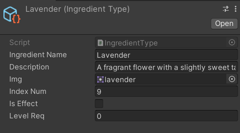
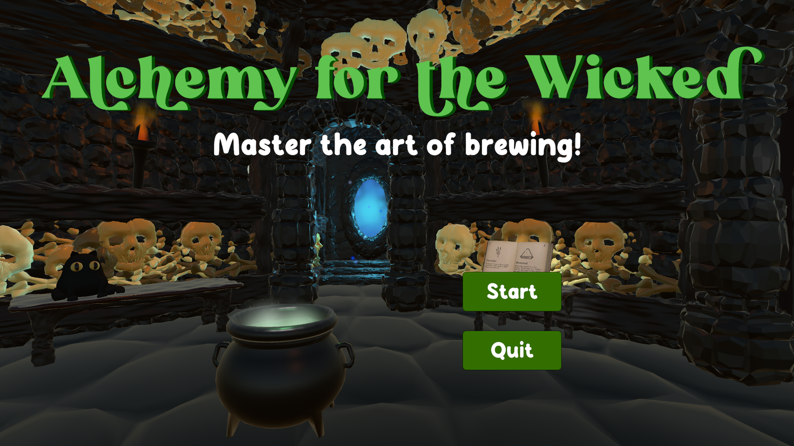
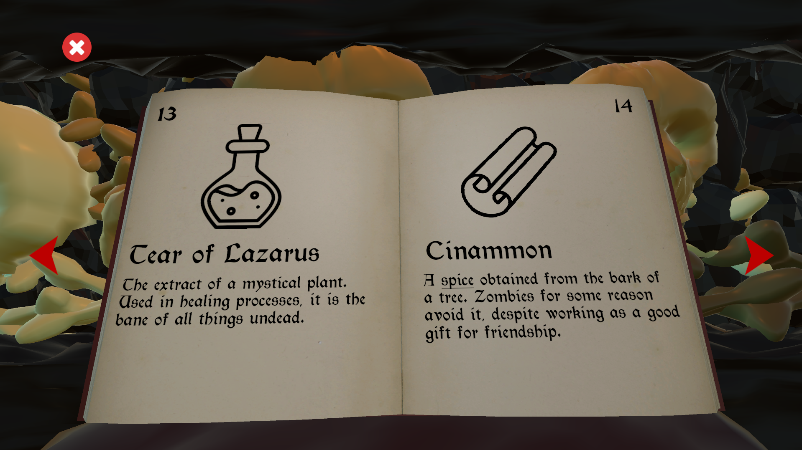
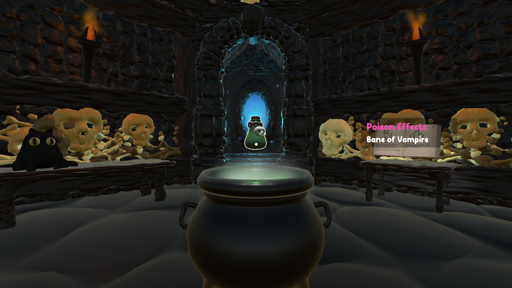
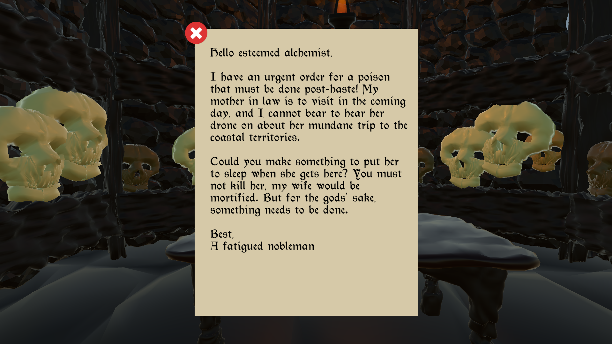

Alchemy for the Wicked
Unity, C#
A first person puzzle game about brewing poisons for the evil denizens of a fantasy world. Created in one week for game dev club's Summer 2024 game jam with a team of four, I served as the team's lead programmer and secondary designer.
My biggest highlights on this project included creating a clean and practical ingredient system for the backend, developing the in-game alchemy book UI/camera system, and designing the main gameplay loop.
- Ingredient System:
All ingredients in the game were implemented with Unity's Scriptable Object data containers. This allowed us to simply define what data was needed for each "ingredient type", which could then be applied to all of our other game systems. For example, an ingredient like lavender needed a name, description, and icon. Once those were assigned in the inspector, it would automatically update wherever lavender's data was needed in the project, like the in game information book or the in the poison brewing system.

- Alchemy Book UI:
In order to research which ingredients were needed to fill an order, the player needed to access an ingredient book to learn what properties might combine to create a poison effect. The book UI elements function in a world space canvas that works with the ingredient system to display all of its information neatly. When accessing the book, the camera's position is interpolated between its access point and a camera spot transform to create a smooth transition.




